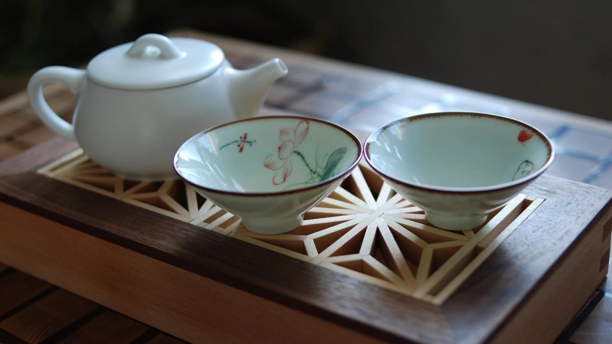

· Чайная в Пилим и Пилим Чайная · Пилим и Пилим

Пауза — настройка слуха.
Завариваем, разливаем, молчим.
Слушаем воду,
стук пиал, дыхание залива.
Чаем занимается Хранитель пауз.
Посуда — ручная работа,
которую можно заполучить.